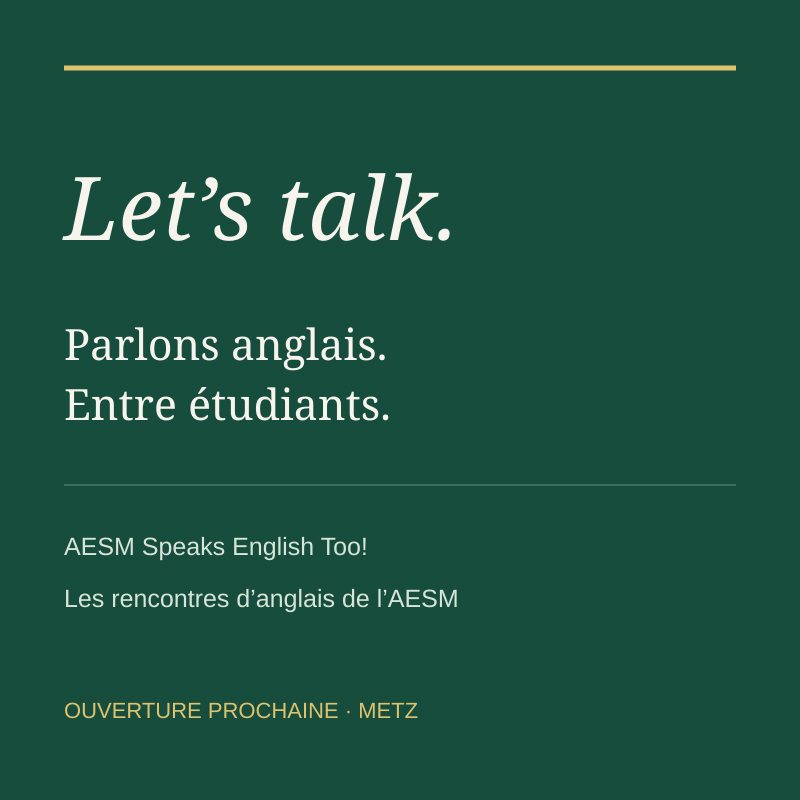

Vie étudiante · Ouverture prochaine
Parlons anglais.
Entre étudiants.
On comprend une question en anglais, mais au moment de répondre, les mots ne viennent pas toujours. Pour s’entraîner, l’AESM prépare des rencontres où chacun pourra parler, essayer et gagner en confiance.

Un entretien de stage, un séjour à l’étranger, une discussion après les cours : les occasions de parler anglais ne manquent pas. Ce qui manque parfois, c’est un endroit pour pratiquer sans avoir peur de se tromper.
Avec AESM Speaks English Too!, les cellules pédagogie et insertion souhaitent créer ce rendez-vous entre étudiants. Le principe : se retrouver chaque semaine pendant deux heures, dans des groupes de 15 à 20 personnes, puis échanger à de petites tables pour que tout le monde ait le temps de parler.
Pas besoin de parler couramment pour venir
Les rencontres seront gratuites et ouvertes à tous les niveaux. Il n’y aura pas de professeur : chacun pourra apporter ce qu’il sait, poser des questions et aider les autres. Les débutants auront toute leur place.
Les études, la vie à Metz, les traditions, les voyages ou le monde du travail pourront servir de point de départ. Les sujets changeront au fil des séances. L’idée reste de pratiquer et de s’écouter, avec le droit d’hésiter et de chercher ses mots.
Les dates, les lieux et l’ouverture des inscriptions seront annoncés par l’AESM. Aucun créneau n’est encore confirmé.
Un espace pour garder le fil entre deux séances
Un site accompagnera les rencontres. Vous pourrez y consulter les prochaines séances et découvrir le fonctionnement du groupe. En créant un compte, vous pourrez indiquer vos disponibilités et ce que vous aimeriez travailler, puis retrouver la préparation, les expressions vues ensemble et les ressources proposées.
Des exercices écrits facultatifs permettront aussi de s’entraîner entre deux rendez-vous et de recevoir un retour des responsables. L’auto-évaluation aidera à voir ce qui devient plus facile au fil des semaines. Elle servira de repère, sans remplacer un test de langue ni attribuer de niveau certifié.
Une organisation attentive à chacun
Les responsables pourront former les groupes selon les disponibilités, préparer les séances et suivre les présences et les progrès déclarés. Les bilans personnels rédigés après une rencontre resteront privés.
Ce projet prendra vie avec les étudiants qui y participeront. Que vous ayez envie de préparer un entretien ou simplement de tenir une conversation plus facilement, vous serez les bienvenus.
Les premières rencontres arrivent prochainement. Pour poser une question ou proposer un sujet, écrivez à aesmetz221@gmail.com.
← Revenir aux actualités